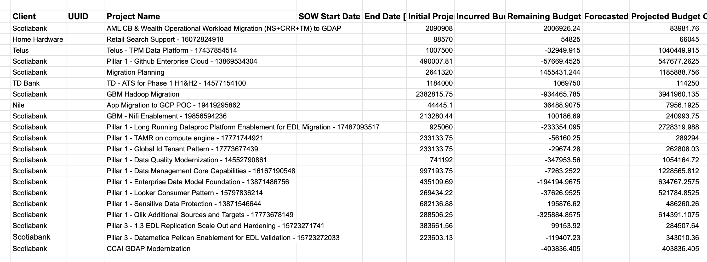

Project Overview
This Apps Script project automates the process of importing and processing data from a CSV file into a Google Sheets document. The project is designed to handle data from a Smartsheet and perform various operations, including filtering, aggregating, and inserting data into specific ranges within the Google Sheets. The project is particularly useful for tracking budgets and time allocation for team members, making it an ideal tool for project management and financial tracking.
Key Features
- CSV Data Import: The script imports data from a CSV file stored in Google Drive into a Google Sheets document. The data is filtered to include only specific columns and then inserted into a designated sheet.
- Dynamic Querying and Data Aggregation: The script uses the AlaSQL library to query the imported data, aggregating the hours incurred by team members on a weekly basis. This data is then inserted into a specified sheet, categorized by team member names and dates.
- Name and Bill Rate Management: The script extracts unique team member names and bill rates from the imported CSV data. These are then inserted into predefined ranges in the "BudgetTracker" and "Settings" sheets. This ensures that the Google Sheets document always reflects the most up-to-date information on team members and their associated costs.
- Automated Data Insertion: The script inserts aggregated data (such as hours worked) into the Google Sheets document. It maps this data to specific rows and columns based on the team member names and dates, ensuring that the spreadsheet is populated correctly and efficiently.
- Data Formatting: Dates are formatted into ISO format, ensuring consistency in data representation across the spreadsheet. This is crucial for accurate data comparison and aggregation.
- User Properties Storage: The script stores the CSV file ID using Google Apps Script's `PropertiesService`, allowing the file to be easily accessed and reused in future script executions without needing to manually input the file ID each time.
- Customization and Flexibility: The script is designed to be flexible, allowing for customization in terms of the ranges and columns that are updated. It is capable of handling different configurations and can be adapted to various project management and financial tracking needs.
Technical Summary
- Languages and Technologies: JavaScript, Google Apps Script, AlaSQL Library, Google Sheets, Google Drive.
- Operations: Data import, transformation, aggregation, and insertion into Google Sheets.
- Project Management: Ideal for tracking team member hours, budgeting, and financial data management.
- Automation: Reduces manual data entry and ensures data consistency and accuracy.
Potential Use Cases
- Project Management: Automatically track and update team member hours and associated costs in a project budget tracker.
- Financial Reporting: Aggregate and present financial data, such as billable hours, in a structured format.
- Data Analysis: Quickly process and analyze CSV data related to project budgets and time management.
This project demonstrates your ability to automate complex data workflows, integrate third-party libraries (like AlaSQL), and create customized solutions for project management and financial tracking within Google Sheets.
Code
Results
